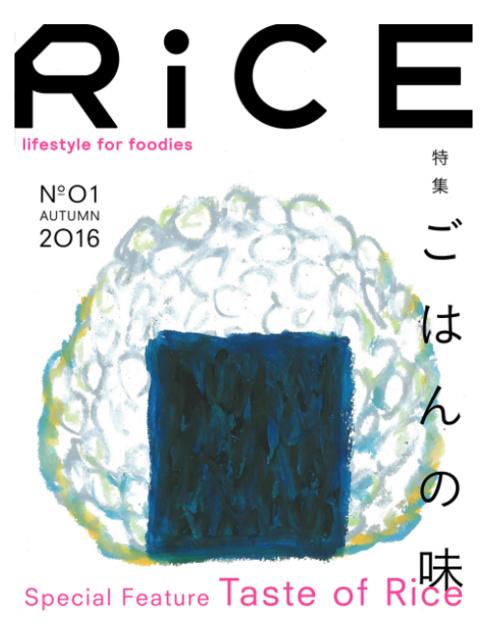

編集者・ライスプレス代表
2016.10.15
「アイスクリーム（EYESCREAM）」で創刊以来12年間にわたり編集長を務めてきた稲田浩が、4月1日発売の2016年5月号をもって同職を退任した。そして、新会社ライスプレスを立ち上げ新たな雑誌を創刊しようとしている。なぜ彼は編集者を志したのか。なぜEYESCREAMを立ち上げたのか。そしてなぜ新たな雑誌を創刊しようとしているのか。その活力が垣間見えたとき、自然と一歩前に進みたくなる。
学生時のときは空気を吸うように本屋に行き、
雑誌を見ていた
ー 雑誌の編集者になろうと思ったきっかけは何ですか。
雑誌には沢山の情報が載っているし、新たな発見ができるから好きでした。今はインターネットが無い状態って想像がつかないでしょ。学生時代のときは空気を吸うように本屋に行き、雑誌を見ていたんです。それをきっかけにいろんな世界が開けた気がしたし、そうしたら、雑誌を作る側になりたい、編集したいという気持ちになりました。それに、当時は雑誌が盛り上がっていましたからね。就職先を考えるときに出版社が輝いて見えていたというのも理由の一つです。
ー それで、出版社に就職しようと思ったのですね
稲田 就職活動で出版社をいくつか受けて、シンコーミュージックっていう音楽系の出版社に内定をもらいました。そこで最初は販売営業、いわゆる書店営業をしていたんですが、縁の下の力持ちといった仕事でしたね。本屋さんで営業したり、取次で部数交渉をしたり。編集がしたいと思って出版社に入社したわけだから｢あれ、思っていたのと違う｣って。本の流通の仕組みを理解できたり、本屋さんの声を直接いっぱい聞けて、自分の基盤にはなっているんで今となっては貴重な経験だったと思っています。だけど当時はやっぱり｢雑誌を作りたい｣っていう気持ちが強くて。ちょうど当時のライバル会社であるロッキング・オンが社員募集していたんで応募してみたら、書類が通って試験受けたり面接したりとんとん拍子で進んでいって。丁度そのときに｢お前も営業頑張ったし、編集に行くか｣って上司に言われて。まだロッキング・オンの内定をもらえる保証がなかったから黙っていたら「BACKSTAGE PASS」っていう邦楽誌に異動になって。やっと編集にいけたと思ったら、すぐにロッキング・オンの内定もらって、｢すみません。転職させてください｣って。今の時代だったらそういうことも珍しくないのかもしれないけど、当時は裏切り者みたいな雰囲気だったね(笑)。でも自分の人生だし、行きたいと思ったから行動に移した。ロッキング・オンでは、最初は「ROCKIN’ON JAPAN」に配属されて。当時は全然売れてなくて、最初の会議がいきなり地下室の密談で、「JAPANを廃刊するかリニューアルか？」みたいな（笑）。びっくりしたけど、結局リニューアルしつつ縮小ってことになって新雑誌準備室に転属されて、「H」っていうカルチャー誌と「BRIDGE」っていう邦楽誌の創刊に立ち会えた。雑誌を1から作れるなんて得がたい経験を続けざまにできて、それが楽しかったんだろうね。その時の経験が自分の原点になっている気がします。それから「Cut」ってカルチャー誌に異動して、その時はカルチャー誌のブームみたいな感じで、雑誌も売れたし広告もたくさん入ったし、やればやっただけ返ってくる感じで楽しかったな。「Cut」では副編にもなって5年半在籍して、最後の２年は洋楽誌の「rockin’on」。結局ロッキング・オンでちょうど10年間働いて、そろそろ新しいことを始めるタイミングかなと思って退職して。自分なりに雑誌を1から作りたいっていう気持ちもあって。｢EYESCREAM｣を作りました。
ー ｢EYESCREAM｣のコンセプトはどういうものでしたか。
稲田 カルチャー全体の中で、凄くエッジなんだけれどポップ感もあるということがコンセプトでした。アンダーグラウンドなものをわざわざ雑誌にするのはもう時代として違うなあと感じていたけど、逆にメジャーなものを雑誌にするのはもう溢れていたから、メジャー／マイナーのぎりぎりのところを狙いたいって思ってましたね。｢EYESCREAM｣っていう名前にしたのも、耳で聞くと｢アイスクリーム｣で、アイスクリームが嫌いな人はいないし、ポップな名前でしょ。だけど字面で見たらEye Screamで｢目が叫ぶ｣っていう意味で、凄いエッジが立っている。そのギャップが面白いと思ったんですよね。メジャー感があるんだけれど、とんがってもいて。とんがっているかと思ったらすごくメジャーな佇まいをしているっていう、そういう雑誌が作れると良いなあって思ったんですよね。まあ簡単にいうとかっこいい雑誌がつくりたかったってことです(笑)。
ー ｢EYESCREAM｣を創刊するにあたり、社会に対して疑問を抱いていることがあったのですか。
稲田 社会に対して疑問があっても、雑誌とは分けて考えていました。自分が抱く疑問があったとして雑誌を通して発表しようと思ったら、それはそれで力になるとは思います。だけど、SNSも出てきて誰でも自分の意見を見てもらうことが簡単になった社会で、個人的な意見を自分の雑誌に入れていくのはその役割じゃないかなって思っていました。
ー ｢EYESCREAM｣の編集長をされていて、モチベーションになっていたことはありますか。
稲田 月刊誌だから毎月決まった日には完成させなければならない。どうしても決めきれなくて保留していたとしても必ずある時点で決断しなければならない。時には妥協もしなければならない。その繰り返しだから校了するまでは毎月ずっと悩んでいました。雑誌ができたら｢無事に出来た｣と、一瞬だけほっとするし良かったなって思うんだけど、すぐに次の号を作らなきゃいけない。それでまた準備をして、すぐ忙しくなって、最後の１週間くらい必死に頑張って、またほっとするの繰り返しなんですよ。だけど年12回も出していると、たまに全てが思ってた通りに進むことがあるんです。こんな号が出来ると良いな、こんな人に出てもらったら、こんな人に撮影してもらったら最高だなっていうのがそのまま惑星直列みたいに決まっていくことがあるんだけど、その時の興奮と達成感は何モノにも代えがたい。そういう時は｢雑誌の神様が下りてきた｣っていうんですけど（笑）。それは無理やりにでも毎月作っているから起きることなんだろうな。でもそんなことはあっても年間1、2回くらいで滅多に無いんだよね。でも、その1回を味わいたいから作っていたっていうのもあるかも。逆のパターンの時は「この号は呪われている」っていう。それは全然珍しくなかった気がする（苦笑）。
ー 最後の号はTシャツを特集していましたよね、何か理由があったのですか。
稲田 Tシャツってポップだし、最後だけにあんまり重すぎないのがちょうどいいなって思ったんです。あとTシャツって雑誌では定番中の定番で、特集としては全然目新しくは無いとは思うんです。Tシャツって常に、そのときのトレンドだったり、デザイナーの人が面白いって感じているものだったり世界の反映みたいな部分があると思っていて。毎月定期的に発行する雑誌も世界の反映みたいなところがあるじゃないですか。そのときどきの状況を取り込んで、フィルターを通して形にするといったところが、Tシャツと雑誌ってシンクロするなあっていう風に思ったんですよね。同じメディアという観点で捉え直したら見たことない、新しい切り口で作れるかもしれないと思ったのもあるかな。12周年だし、もう退任するって決めている状態で最後の2号を作ったので、｢ああ、これで最後なんだな｣って味わいながら作っていたんですよ(笑)。
｢EYESCREAM｣はカルチャー誌の中で、
中心にファッションがあって、それにあたるものが
「RiCE」ではフードだという感じです。
ー ｢EYESCREAM｣の編集長を退任して、ライスプレス株式会社を立ち上げようと思ったきっかけは何ですか。
稲田 ｢EYESCREAM｣を12年もやったことで、そして発行会社を３度も変えながら毎年12号一回も欠かさずにバトンを渡せることで、ある種達成感もあったんです。と同時に、また新しいことをやりたいなっていう気持ちになったっていうのが一つ。それと次にやりたいことのイメージが出来て、そのタイミングを感じ取ったというのもありますね。やりたいことは２つあって、１つ目として今｢RiCE｣っていう雑誌を作っています。フードカルチャーの雑誌なんですけれども、コーヒーブームやオーガニックブームとか、カルチャー全体の中でフードが盛り上がってきている中で、ファッション雑誌はいまだに飽和状態でバリエーションが豊富なのに比べて、フードカルチャーを扱う雑誌は数もバリエーションも少ないまま。今の盛り上がっている空気感にもっとアジャストするような雑誌があってもいいのかなと思ったんです。今、日本に来る海外の人が増えていますよね。誰でもそうだけど、外国に行くときのモチベーションって、せっかく来たんだから現地でしか食べれない美味しいものを食べたいっていう気持ちが大きいと思うんです。だから日英バイリンガルにして、日本に来た外国人や日本に興味を持っている外国の人にもそのまま読んでほしいし役立ててほしい。でも作りながら気が付くと、カルチャー雑誌になっていましたね。｢EYESCREAM｣の場合はカルチャーの全体の中で、真ん中にファッションがあって。それにあたるものが今回はフードだという感じです。フード業界がカルチャー化していることの反映かもしれないですが。実際に今飲食に従事してる面白い人たちにも協力してもらい、編集やライターとしても関わってもらってるんですよ。そこがユニークだし、他にはないディープな誌面が生まれている気がします。昔だったらファッションデザイナーになってたんじゃないかなっていう子が飲食をやっていることも多くて、フードの世界は今センスの良い若者が多いですね。僕の周りだと特にアラサーくらいが元気。だから、この業界面白くなっていくんじゃないかなと思います。｢RiCE｣は年4回、季節に合わせて発行しようと思っています。また、来年春くらいを目処にオンラインでも｢RiCE｣をやっていきたいなと。それがやりたいことの1つですね。もう1つは、｢SPADE｣を年2回、発行しようと思っています。こっちは今までやっていたこと引継ぎ、ファッションカルチャーを中心とした雑誌ですね。
一歩踏み出すときって、いっぱい理由があるじゃん。
その理由が飽和したとき、溢れたときに
｢今だな｣って思う。
ー 自分の環境を変えるのは凄く怖くて勇気がいることだと思うのですが。稲田さんは自分のやりたいと思ったら行動しているように感じます。
稲田 人間って普通変わりたくないからね。「こうなるといいな」とか「こうしたい」とか思っても、本当に行動を起こす人って一割に満たない。自分で行動を起こすってことはリスクをとるということで、行動しなければ安全なまま自分を守れる。僕も悩む方ですね。でも人生一回だし、やらないで後悔するより、やって後悔したほうがいいなって思い行動するようにしています。一歩踏み出すときって、理由は一つじゃないですよね。その理由が飽和したとき、溢れたときに｢今だな｣って思う。何がきっかけになるかはわからないけど、自分がある一定の方向に向かっていたら全部が理由になっていくから、それを感じ取れるかどうかじゃないですか。耳を塞いだり目を瞑ったら、何も見聞きしないで済むけど、自分を開いていたら色んなサインが見えてくると思う。
ー やりたいことはどうしたら見つけることが出来るのでしょうか。
稲田 昔と違って、情報が多くて選択肢も多いから絞りこめない気持ちもわかるけどね。でも自分がどういったことに喜びを感じるかだと思います。仕事って楽しいことばかりではないし、苦労があるのは当たり前じゃない。だけど自分が好きなことだったらその苦労も楽しくて時間が一瞬に感じたりする。その瞬間がどこにあるのかをしっかり考えて探しておくと良いんじゃないかな。好きな物が多い場合は、その好きなものの中で、どれがより好きかを見極めると良いと思います。
ー 努力が報われるとは限らないですが、努力が実るには何が大切だと思いますか。
稲田 やっぱり、開いていることだと思います。閉じていたら何も入ってこなくなる。どんなことでも否定から入るとゼロで、どんなに掛け算をしてもゼロになる。だけどちょっとでも開いて、新しい何かが入ってくると自分の中にあるものと結合して、面白い発想が生まれるかもしれないし、行動に出る要因となるかもしれない。いつどんな出会いがあって、それによってどう変わっていくかなんて今の時点じゃわからない。だから、常に自分を開いていると、新しい出会いが生まれ、全く違う人生が切り開けていく可能性があると思う。なにを選び取るかはその時の瞬間的な判断でしかないし、時々偏ったりもするだろうけど、なるべくニュートラルでいることも大切だと思います。そうすると360度いつでも、どんなことにでも反応出来る。成功した人にインタビューでお話をすることも多いけど、やっぱりニュートラルな人が多いかな。個性的なんだけど、変に偏らずバランス取れている人が多いような気がする。昔はもっとバランスが取れていない人のほうが突出して、成功をしていたのかもしれないけど、今はバランスが取れている人のほうが成功し易いと思うんです。あと、第一線で活躍している方々は皆人として立派だよ(笑)。
ー 今の若者に対して思うことはありますか。
稲田 あんまり年齢って関係ないなと思うんですよね。昔より年齢差って無くなってきているんじゃないかなって思ってて、僕ら20代のときって40代の人なんて遠い存在だったっていうか、話も出来ないくらい(笑)。そのくらい住んでる世界が違ったんですけど、でも今はそんなに特別なことでもないのかなと。｢今の若者は…｣って言われることもあると思うけど、年齢とは違った軸で会話することが多いと思うし、同じ目線で話が出来ると思います。経験値は違うかもしれないけど、経験ってプラスの部分と邪魔をする部分もあるから。フレッシュな気持ちで作れるならそれが一番良いと思いますしね。20代のカメラマンと一緒にページを作ると、｢そうくるんだ｣って面白かったりもして。だから年齢が意味を成さなくなってきているんじゃないでしょうか。最近はそう思っています。
ー 若者に対してアドバイスなどはありますか。
稲田 自分の好きな基準を持っている人ってそれが強みだと思うんです。何が好きなのか、何がやりたいのか、何が言いたいのかわからない状態の人って、自分でもわからないから人に示せないし。それは凄くもったいないから、何かにつけ早く好きかそうでないかの基準を持っていたほうが良いのかなと。何においてもそうなんだけど、縦軸横軸のマトリックスがあって、それが出来てくると動きやすいし判断しやすい。これは自分にとってかっこいいのかわるいのか、面白いのか面白くないのか、クールなのかストレンジなのか。そういう座標軸があって、「あ、これはこの辺だな」っていうのが当てはめられるようになってくると良いんじゃないかな。それが段々一個のジャンルじゃなくなって、層になって、立方体になると、色んなことが見えてくるじゃないかと思います。
EYESCREAM
http://eyescream.jp
ライスプレス
https://www.facebook.com/ricepress/

「RiCE(ライス)No.1 AUTUMN 2016」
https://www.amazon.co.jp/RiCE-%E3%83%A9%E3%82%A4%E3%82%B9-No-1-AUTUMN-2016/dp/49909235029